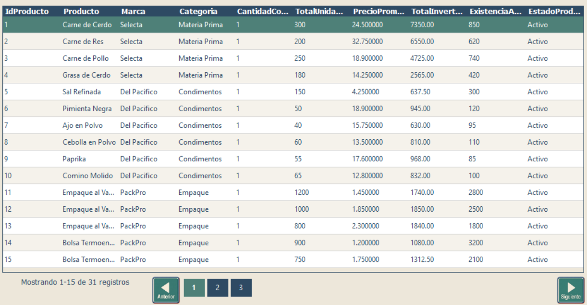

Capacitación - Consultas
Visualización, selección y paginación de registros
Visualización, selección y paginación de registros
Esta pantalla muestra en una tabla los registros obtenidos después de ejecutar una consulta. Desde aquí puede revisar la información, desplazarse entre las páginas disponibles y seleccionar el registro que desea devolver a la ventana anterior.

| Control | Función | Cómo usarlo |
|---|---|---|
| Tabla de resultados | Muestra los registros encontrados por la consulta. | Revise las columnas y filas hasta identificar el registro que necesita. |
| Fila de resultado | Representa un registro individual de la consulta. | Haga doble clic sobre la fila que contiene la información que desea seleccionar. |
| Anterior | Muestra la página anterior de resultados. | Úselo cuando se encuentre en la página 2 o superior y necesite regresar. |
| Números de página | Permiten ir directamente a una página específica de resultados. | Presione el número correspondiente a la página que desea consultar. |
| Siguiente | Muestra la página siguiente de resultados. | Úselo cuando todavía existan registros posteriores a la página actual. |
| Indicador de registros | Informa qué rango de registros se está mostrando y el total disponible. | Consúltelo para saber en qué parte del listado se encuentra y cuántos registros existen. |